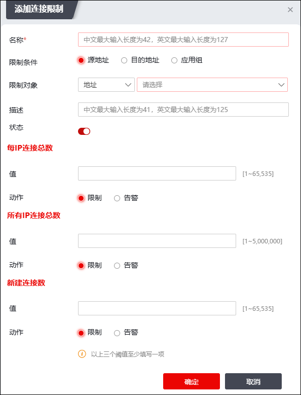

Ø连接限制支持基于三种对象（源地址对象、目的地址对象、应用组对象）进行配置，这三个对象不可同时配置，每次配置只能选择其中一个。
Ø连接限制包含三种限制类型：单个IP每秒新建连接限制、单个IP连接总数限制、所有IP连接总数限制。这些限制类型在配置基于源地址对象和目的地址对象的连接限制策略时可以选择多个，配置基于应用对象的策略时只能选择连接总数限制。
Ø当数据包匹配到对应的配置时会触发相应的动作：限制或告警。当动作为限制时对连接进行阻断并报警；当动作为告警时，只报警不阻断连接。
配置连接限制策略的具体操作如下：
| 步骤1 | 选择 ，激活“连接限制”页签。 |
| 步骤2 | 点击“ ”，弹出“添加连接限制”窗口，如下图所示。 ”，弹出“添加连接限制”窗口，如下图所示。 |

在设置连接限制策略时，各项参数的具体说明如下表所示。
参数 |
说明 |
|---|---|
名称 |
必填项，填写该连接限制项的名称。 |
限制条件 |
设置连接限制的条件，可选项：源地址、目的地址、应用。 |
限制对象 |
当“限制条件”参数为“源地址”或“目的地址”时，可配置地址对象或地区对象，针对该对象进行连接限制；关于地址对象的配置请参见 地址，关于地区对象的配置请参见 地区。 当“限制条件”参数为“应用”时，可配置应用对象，针对该应用对象进行连接限制；关于应用组的配置请参见 应用。 |
描述 |
设置对该连接限制策略的必要描述信息。 |
状态 |
状态为“”时该策略为启用。 |
每IP连接总数 |
当“限制条件”为源地址或目的地址时，该参数为可选项，设置单个IP的连接总数阈值，取值范围为1-65535。 配置完成后选择该阈值对应的动作，可选项为限制和告警。 |
所有IP连接总数 |
可选项，设置所有IP的连接总数阈值，取值范围为1-最大值（最大值受license控制）。 配置完成后选择该阈值对应的动作，可选项为限制和告警。 |
每IP每秒新建连接数 |
当“名称”为源IP或目的IP时，该参数为可选项，设置单个IP的每秒新建连接数阈值，取值范围为1-65535。 配置完成后选择该阈值对应的动作，可选项为限制和告警。 |
| 步骤3 | 配置完成后，点击【确定】按钮，完成连接限制策略的创建。 |